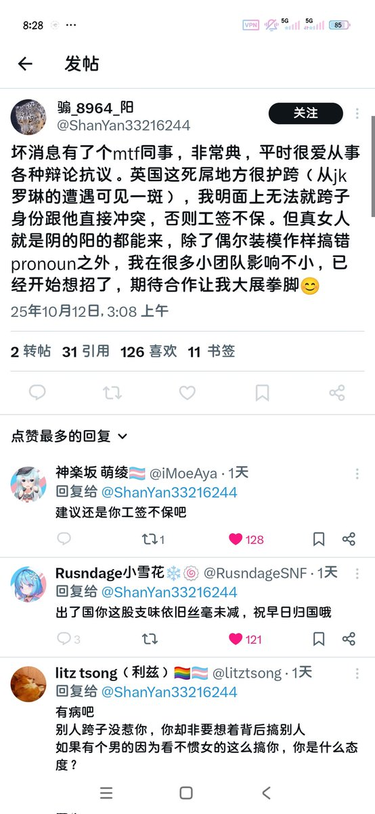

時璃風医詩🍥🌈
@hagishigure
@chiyingtaoxox 你自己看看你有多陰呢？
那個原po你是無視的。
她轉發的這條推文僅僅是作為反對“父權”的“顛覆性重構”。
這樣斷章取義好玩嗎？引起女權內戰永遠是傳統生理主義女權對其他女權主義，例如遊牧女權等，發起的“模仿”“父權”的“壓迫”。
斯皮瓦克在《子altern能否發言？》和哈拉維在《賽博格宣言》早已辨明。

不吃葡萄吃樱桃
@chiyingtaoxox
你最好tm出来给我解释清楚哈 不然我会曝光你是一个某脱口秀女权组织的建立者 你的活动应该也有很多顺直女会去看吧 赚女人的钱是要赚的 母人也是要骂的 你真的不要脸到家了 https://t.co/NQcEstOCER